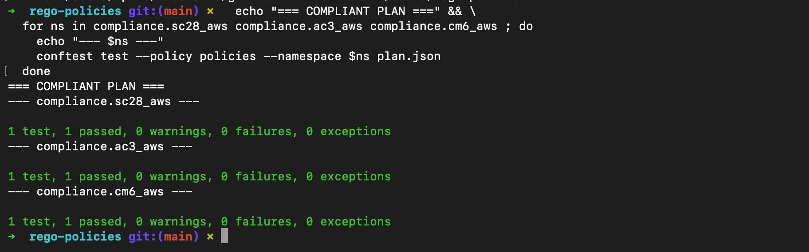
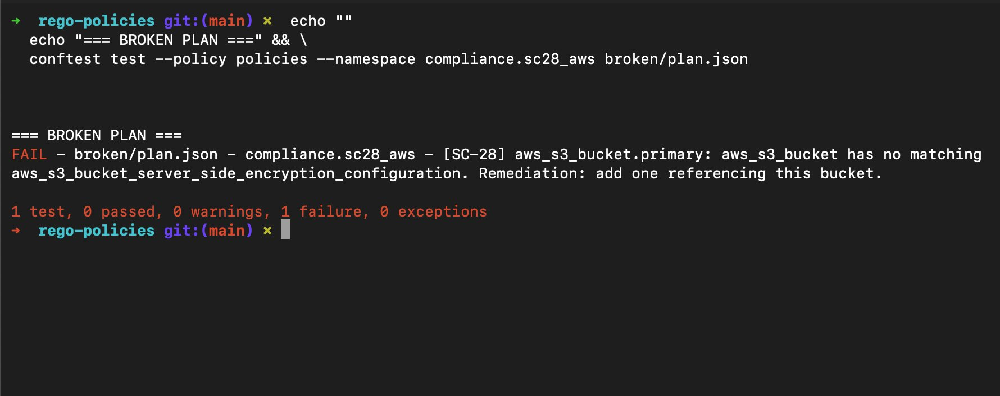

// Project Walkthrough · 06
Policy as Code Gate with Conftest: AWS
Conftest policy gate that blocks Terraform applies on non-compliant AWS infrastructure by running three Rego policies against plan JSON. Fail-closed, exit-code-driven, zero screenshots.
conftest
opa
rego
aws
terraform · nist 800-53 · ci · policy-as-code
Running the Rego policy library against a real AWS Terraform plan exposed a coverage problem: a rule written for google_storage_bucket returns zero findings on an AWS plan. Not because the infrastructure is compliant. Because the rule never evaluated anything. It passed silently.
AWS-specific variants of each policy fix that. They check aws_s3_bucket resource types under the same NIST control IDs. The gate is fail-closed and exit-code-driven, drops machine-readable JSON evidence, and requires no console access.
A policy written for GCP resource types evaluates to undefined against an AWS plan. OPA treats undefined as an empty set: no denials, no failures, gate passes. From the outside it looks like the plan is compliant. It was never evaluated. That is the trap with cloud-agnostic policy libraries.
// key insight
A policy gate that passes because no rules matched is indistinguishable from a gate that passed because everything was compliant. The answer is not a single multi-cloud policy. Cloud-specific variants under the same control IDs, each covering the resource types that actually exist in that plan, are what close it.
// sc-28 by reference
Match Configuration, Not Values
Bucket names contain a random_id suffix unknown at plan time, so planned_values.bucket is null. Matching by configuration.references against aws_s3_bucket.primary.id resolves correctly at plan time.
// ac-3 by planned values
Split the Lookup
The four public-access-block flags are concrete in planned_values even though the bucket ID is not. Reference matching lives in configuration; flag validation lives in planned_values.
// tags_all not tags
CM-6 Catches Provider Tags
tags_all merges provider default_tags with resource-level tags. Checking tags alone misses tags applied at the provider level, a gap that looks clean at the resource level.
// || true per namespace
All Namespaces Evaluate
A failure in one namespace doesn't abort the script before others run. Every policy evaluates, every result lands in the evidence file, exit code is set at the end.
Three policies, each an AWS-specific variant of the GCP policies built in Lab 3.3. Same control IDs, different resource types and attribute paths.
SC-28 · aws_encryption.rego
S3 Encryption via KMS Reference
Matches by configuration.references rather than planned_values because the bucket name contains a random_id suffix that is null at plan time. Checks that a KMS key reference exists in the bucket's encryption configuration. Deny returns the resource address and SC-28 with exact remediation step.
AC-3 · aws_public_access.rego
All Four Public Access Block Flags
Validates all four AWS S3 public access block flags against planned_values: block_public_acls, block_public_policy, ignore_public_acls, restrict_public_buckets must all be true. Any single flag missing or false triggers a deny. Resource address and AC-3 returned with the specific flag that failed.
CM-6 · aws_tags.rego
Required Tags via tags_all
Checks tags_all rather than tags to catch labels applied at the provider level via default_tags. Uses set subtraction (required_keys minus provided_keys) to identify exactly which tags are missing per resource. Deny returns the resource address, missing tag keys, and CM-6.
The wrapper script is the CI entrypoint. It runs all policy namespaces, captures machine-readable JSON evidence, and exits non-zero on any failure. The || true pattern on each conftest call ensures all namespaces evaluate before the exit code is determined. A python3 one-liner parses the JSON output to set the exit code without depending on conftest's text format.
// policy-gate.sh — simplified
PLAN="terraform/plan.json"
EVIDENCE="evidence/policy-results.json"
conftest test --namespace compliance.sc28 --output json $PLAN >> $EVIDENCE || true
conftest test --namespace compliance.ac3 --output json $PLAN >> $EVIDENCE || true
conftest test --namespace compliance.cm6 --output json $PLAN >> $EVIDENCE || true
python3 -c "import json,sys; results=json.load(open('$EVIDENCE')); sys.exit(1 if any(r.get('failures') for r in results) else 0)"
// ci entrypoint
The --output=json flag means CI gets a machine-readable artifact it can parse, store, and diff across runs, not a text blob that breaks on conftest version upgrades.
The broken-plan test confirms the gate fires with a deny message naming the resource, the control, and the exact remediation step. The wrapper exits non-zero, blocking the apply.

// compliant plan — all three namespaces pass: sc28_aws, ac3_aws, cm6_aws · 1 test, 1 passed, 0 failures each

// broken plan — SC-28 fires: aws_s3_bucket.primary has no matching server_side_encryption_configuration · resource address, control ID, and remediation returned
tools/rego-policies/
policies/aws/
aws_encryption.rego
aws_public_access.rego
aws_tags.rego
tests/aws/
aws_encryption_test.rego
aws_public_access_test.rego
aws_tags_test.rego
terraform/
policy-gate.sh
evidence/